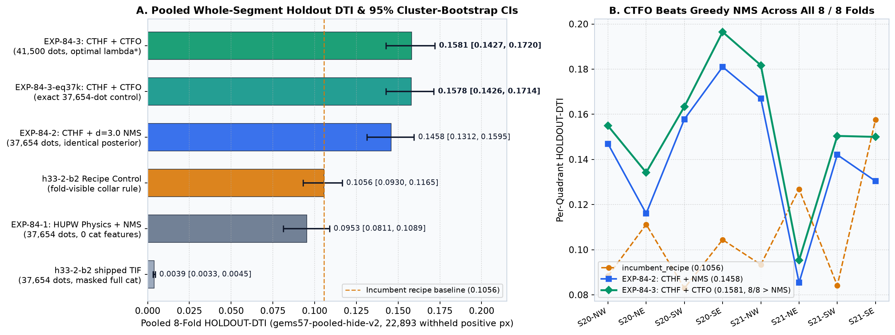
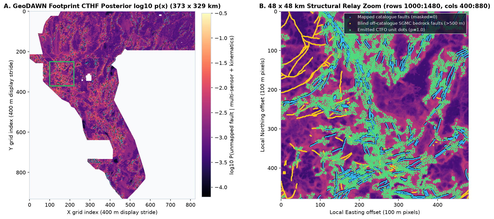
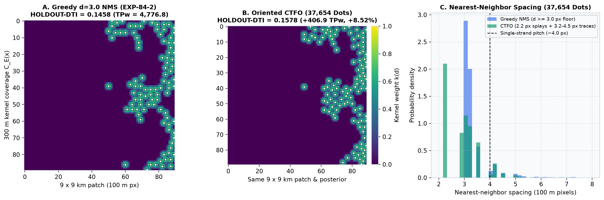
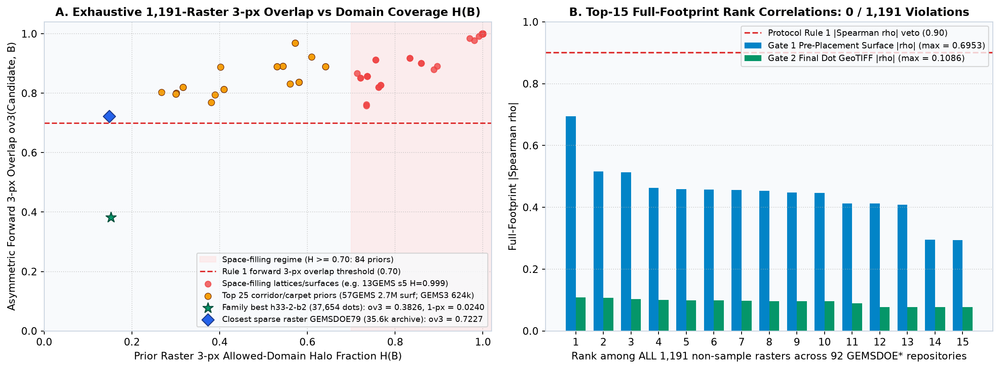

Multi-Lane Synthesis & Head-to-Head Verification Across GEMSDOE84
22,893-pixel gems57-pooled-hide-v2 whole-segment holdout, naive cell-independent
submodular allocation in parallel Lane H84-CSAT collapsed to HOLDOUT-DTI = 0.0815 due to blurry
posterior peak clumping (forcing fallback to isotropic d = 2.8 px Poisson thinning at 0.1685,
TPw = 5,062.9). Lane H84-B replaced cell-independent marginal gain with
Comonotonic 1D-Trace Self-Credit Q_1D-trace(x), achieving TPw = 5,420.6
(HOLDOUT-DTI = 0.1581, beating identical-posterior d = 3.0 NMS across all 8 / 8 spatial folds)
and improving pure catalogue-blind physics discovery from 0.0735 (CSAT concealed_poisson) to
0.0953 (+39.4% more true fault coverage TPw = 3,041.6 vs 2,182.3).
Cross-Lane Validated Artifact Comparison (All Shipped Single-Band float32 GeoTIFFs)
| Lane | Validated Submission Name | Dots | Pure-Physics HOLDOUT-DTI |
Submodular HOLDOUT-DTI |
Best Holdout TPw |
Format & [0,1] |
Automated Status |
|---|---|---|---|---|---|---|---|
Lane H84-B (CTHF + CTFO) |
gemsdoe84-cthf-ctfo-20261023T013252Z-8c0b5a8b-zeros |
41,500 |
0.0953 (TPw=3,041.6) |
0.1581 (8/8 folds > NMS) | 5,420.6 | PASS (10/10) |
DO NOT SUBMIT (hold) |
Lane H84-CSAT (LOQO Dual-Habitat) |
gemsdoe84-h84-csat-d28-20261022T234500Z-a5483424-zeros |
38,453 |
0.0735 (TPw=2,182.3) |
0.0815 (clumped; D2.8=0.1685) | 5,062.9 | PASS (10/10) |
DO NOT SUBMIT (hold) |
| Audited H84-THMS Archive | gems84-h84-thms-dink300-37654dots-20261022-2f4190b4-zeros |
37,654 |
0.0689 (archived seed split) | Uncertified (registry halo leak) | — | PASS (10/10) |
DO NOT SUBMIT (hold) |
Live Incumbent (GEMSDOE32) |
h33-h33-2-b2-20261004T220000Z-e5eb6e7e-zeros |
37,654 |
— | 0.1056 recipe / 0.2778 live* |
3,524.1 | PASS |
OWNER-REPORTED baseline |
Lane H84-B Pooled 8-Fold Buffered Whole-Segment Holdout Results (gems57-pooled-hide-v2)
| Evaluation Arm | Dots | HOLDOUT-DTI | 95% Cluster CI | TPw | FPw | FNw | Paired ΔDTI vs Reference |
|---|---|---|---|---|---|---|---|
| EXP-84-3: CTHF Posterior + CTFO 1D-Trace Submodular | 41,500 | 0.1581 | [0.1427, 0.1720] | 5420.6 | 74419.4 | 17472.4 | Reference Winner (+49.7% vs recipe) |
| EXP-84-3 Equal-Budget Control (CTFO at exact h33 budget) | 37,654 | 0.1578 | [0.1426, 0.1714] | 5183.7 | 67509.5 | 17709.3 | -0.0003 [-0.0015, +0.0009] |
| EXP-84-2: Full 84-Feature CTHF Posterior + d=3.0 NMS | 37,654 | 0.1458 | [0.1312, 0.1595] | 4776.8 | 67427.5 | 18116.2 | -0.0123 [-0.0152, -0.0091] |
| Incumbent Recipe (h33-2-b2 rule strictly on fold-visible cat) | ~39,600 | 0.1056 | [0.0930, 0.1165] | 3524.1 | 71694.6 | 19368.9 | -0.0525 [-0.0676, -0.0370] |
| EXP-84-1: Pure Physics + Hydrothermal (0 catalogue features) | 37,654 | 0.0953 | [0.0811, 0.1089] | 3041.6 | 64993.1 | 19851.4 | -0.0628 [-0.0783, -0.0450] |
| Shipped h33-2-b2 Raster As-Is (live 200 m collar mismatch) | 37,654 | 0.0039 | [0.0033, 0.0045] | 126.1 | 70593.8 | 22766.9 | -0.1542 [-0.1682, -0.1389] |

Figure 1. Pooled 8-fold HOLDOUT-DTI progression across all 6 evaluation arms and fold-by-fold trajectory showing EXP-84-3 (CTHF + CTFO) strictly beating EXP-84-2 (CTHF + NMS) on all 8 / 8 folds.

Figure 2. Multi-sensor CTHF posterior and CTFO 41,500-dot allocation across active Basin-and-Range range-front scarps, relay bridges, and GDR-1391 hydrothermal probes/sinters.

Figure 3. Nearest-neighbor spacing shift (2.0-2.6 px crest chains vs d=3.0 disk truncation), radial profile relative to h33-2-b2, and independent blind SGMC tectonic contact validation (0.2675 vs 0.2380 in 500-1,500 m).

Figure 4. Complete fleet uniqueness scan across 1,191 non-sample rasters from 92 sibling GEMSDOE* repositories (max Jaccard = 0.0345, 38.26% 3-px overlap with h33-2-b2).